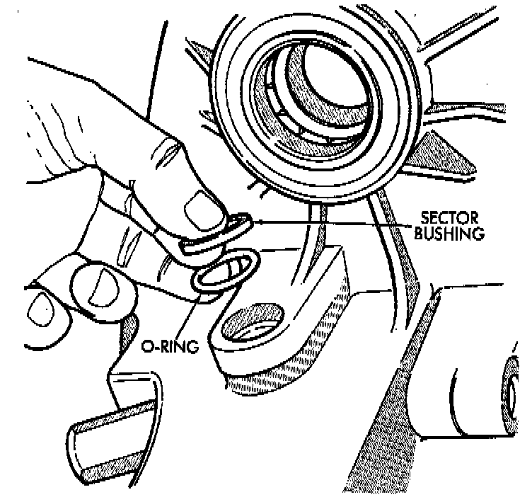
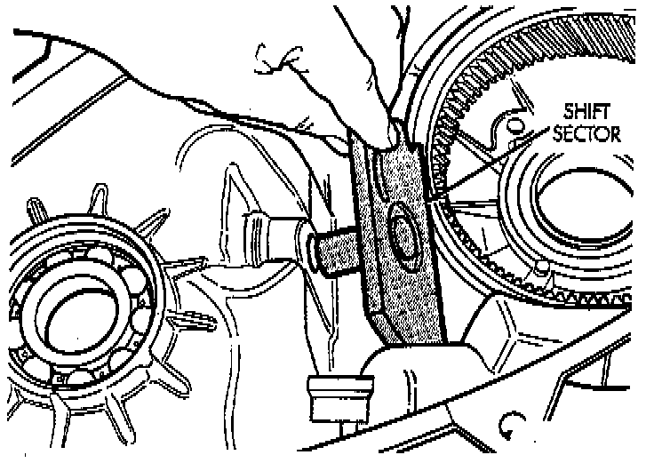
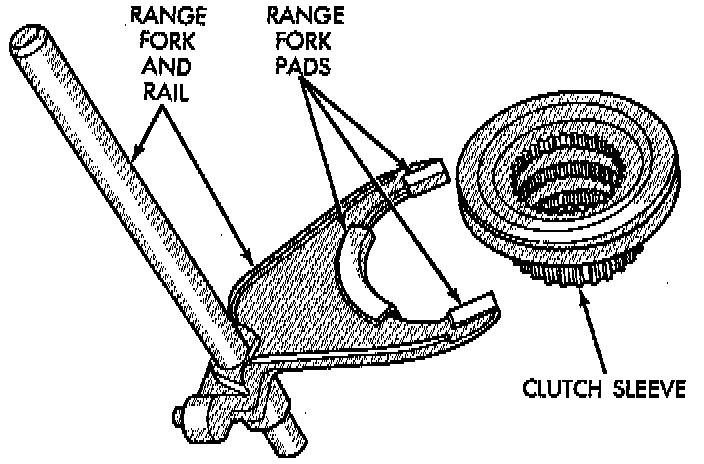
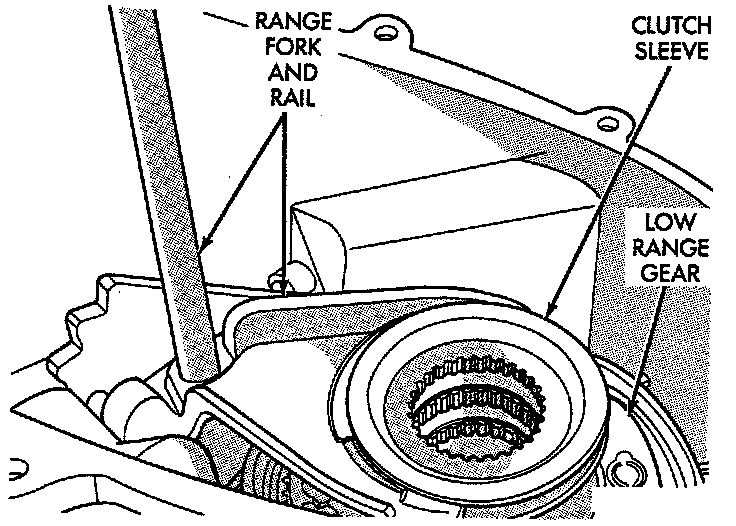
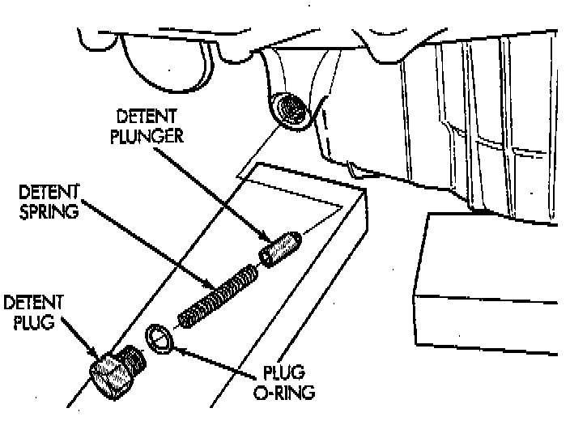

Shift Forks and Mainshaft Installation

1. Install new sector shaft O-ring and bushing.

2. Install shift sector.

3. Install new pads on range fork, if necessary.
4. Install clutch sleeve in range fork.

5. Install assembled range fork and clutch sleeve.
6. Insert range fork pin in sector. Then rotate sector and seat clutch gear in low range gear.
7. Verify that range fork rail is seated in case bushing and that clutch sleeve is properly engaged in low range gear.
8. Rotate sector to Neutral position.

9. Install new O-ring on detent plug.
10. Lubricate detent plunger with transmission fluid or light coat of petroleum jelly.
11. Install detent plunger, spring and plug.
12. Verify that plunger is properly engaged in sector.
13. Insert mainshaft into input gear pilot bearing.